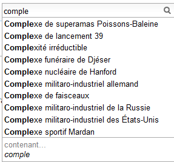

Complétion#
La complétion est un méchanisme qui permet à un utilisateur de saisir les mots de sa recherche avec moins de caractères qu’elle n’en contient. L’utilisateur saisit plus rapidement.
Si ces outils sont appréciables du point de vue utilisateurs, ils le sont tout autant côté site web en réduisant la variabilité dans le texte saisie, en particulier les fautes d’orthographes. L’utilisateur a besoin de moins de requêtes pour trouver son produits et cela diminue d’autant la charge du serveur qui lui fournit ses résultats.
Ce chapitre aborde différentes problématiques liées à ce genre de systèmes qui sont présents partout sur Internet, moteurs de recherches, sites de ventes en ligne, journaux… Il existe de nombreuses librairies qui les implémentent. La plus connue en Python est whoosh.
Quelques éléments de codes sont disponibles dans le module
completion et le notebook
Complétion. Vous pouvez également lire
How to Write a Spelling Corrector
de Peter Norvig et découvrir le sujet
avec On User Interactions with Query Auto-Completion
de Bhaskar Mitra, Milad Shokouhi, Filip Radlinski, Katja Hofmann.
Notebooks associés :